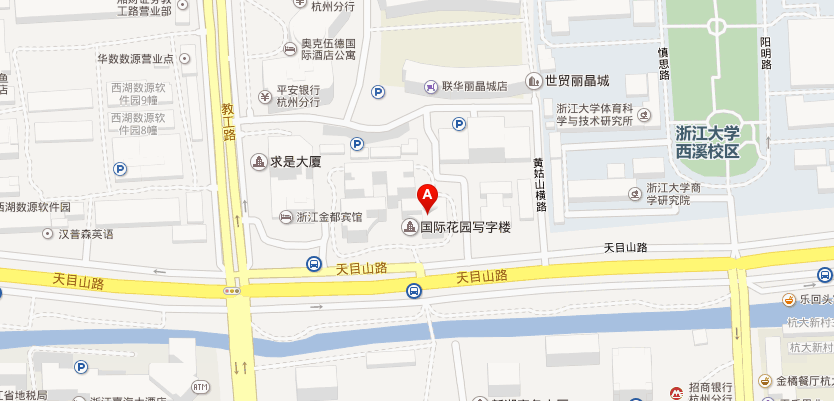

【2015年MOTSS新年趴】补充通知
酷儿论坛
酷儿论坛
微信号
motss2002
功能介绍
杭州酷儿论坛（motss.info）致力于为杭州及周边地区学生性少数人群提供一个多元、健康、平等的环境，促进自我认同和社会认可。
2015-01-02
收录于话题
Andiamo旸有话说：MOTSS新年趴即将于明天举办，小水果们你们准备好了吗~~
1
活动时间地点
2015年1月3日13:30
在好乐迪(国际花园店)百老汇包厢举办2015年MOTSS新年趴。
首次来杭州或者其他情况找不到活动地点的，当天请致电13588428033（爬爬）。

乘公交车，可坐到庆丰村站或者浙大西溪校区站。
2
关于活动报名
今天
重新增加名额至70人
，想要参加的伙伴请抓紧到报名帖去报名，报了名因特殊情况来不了的伙伴，请及时选择取消以方便其他人报名。
未报名来参加的空降人员，将
加收空降费10元
，并且不一定能保证有相应的福利。
3
颁奖及微视频《留下》首映
新年趴将颁发2014年年度人物奖以及光影留痕冬季摄影比赛、文字时光冬季征文比赛的奖，
各奖项名单将于1月2日公布
，获奖同志如不能来参加新年趴，请委托来参加的朋友领奖。
微视频《留下》将在新年趴首次公开放映，没有意外的话我们是不会上传到网络的，所以不来参加的也就看不到了。